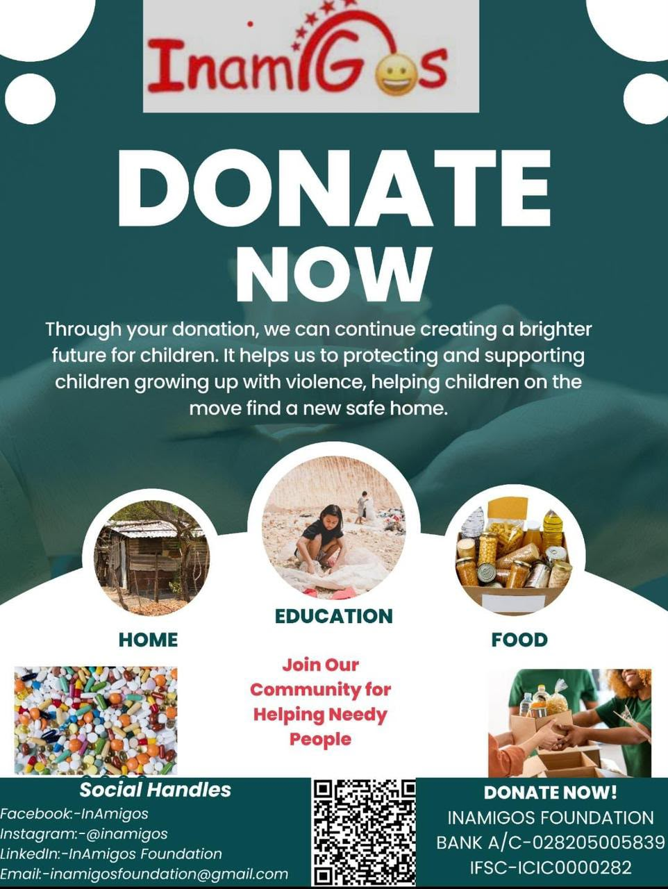
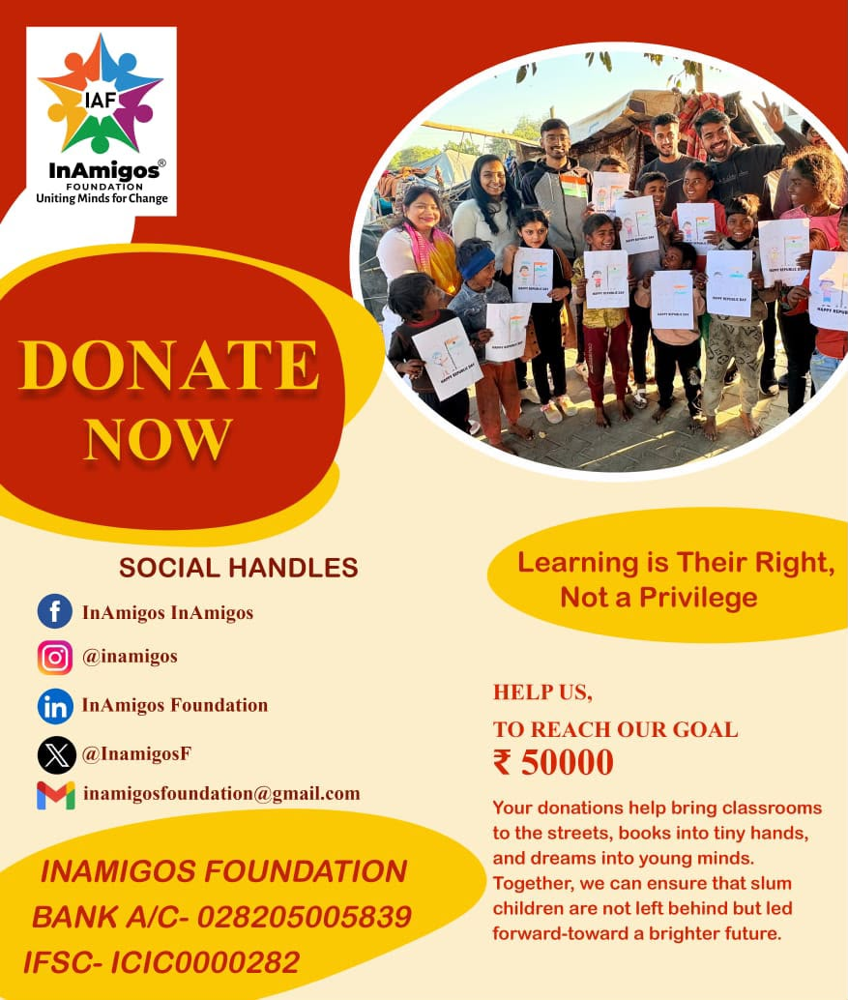
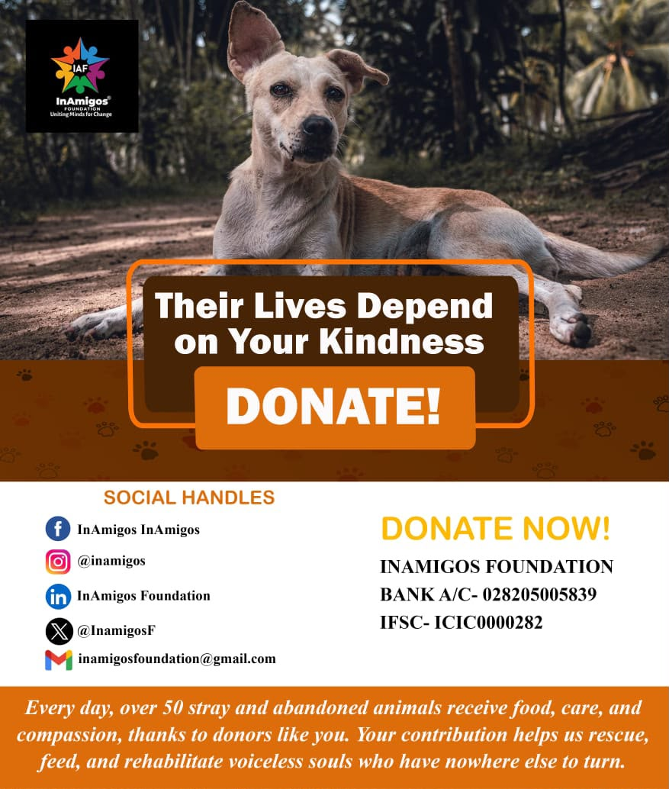
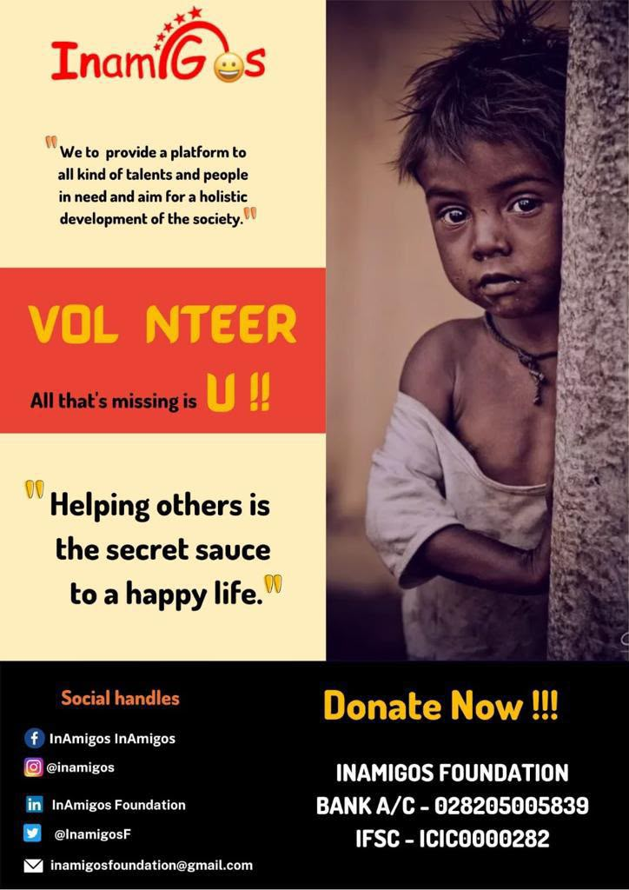
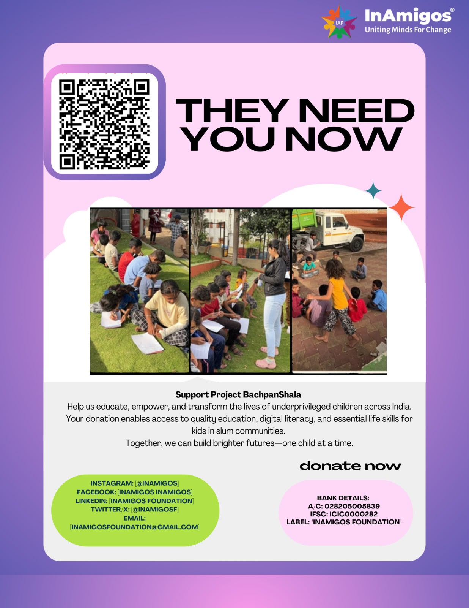

Visual Awareness
Campaign & Project Gallery






Uniting Minds for Change
InAmigos Foundation works toward social inclusion, education support, food distribution, animal welfare, women empowerment, environmental sustainability and skill development across India.
Your support can help children learn, families receive care and communities grow stronger.
About The NGO
InAmigos Foundation is a Section 8 registered non-profit organization founded on September 23, 2020. The foundation is based in Chhattisgarh and works through volunteers, professionals and partners to bring measurable social change.
The organization is 80G and 12A certified, CSR-1 registered, NITI Aayog registered and ISO 9001:2015 certified.
Ongoing Initiatives
Food and clothing support for underprivileged families and communities.
Education support, basic digital literacy and life skills for children.
Animal welfare through rescue support, feeding and protection initiatives.
Women empowerment through skill development and awareness programs.
Environmental conservation, plantation drives and sustainability awareness.
Skill development and internship-based learning for employability growth.
Social Purpose
Beneficiaries reached through different initiatives.
States connected through volunteer-driven work.
Volunteers contributing to community welfare.
Visual Awareness





Call To Action
You can support by volunteering, spreading awareness, donating resources or helping campaigns reach more people.